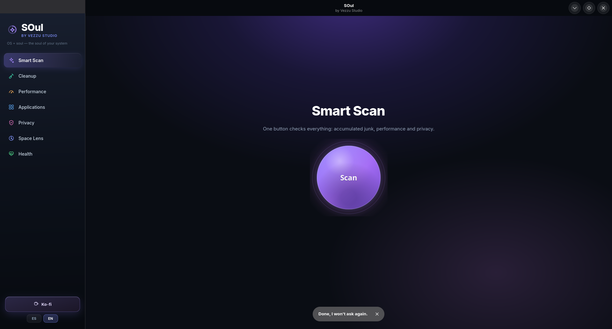

Las herramientas clásicas nacieron para administradores de sistemas. Esto es lo que sigue.
SOul lee la misma memoria, el mismo procesador y los mismos procesos — y te los dice en tu idioma, con un botón para arreglarlo. Nada de VIRT, RES ni NI.
Linux x86_64 · GTK4 + libadwaita · un solo archivo

La idea
Todo lo que SOul muestra viene de las mismas fuentes que usa cualquier monitor de sistema — /proc, systemd, SMART. La diferencia es lo que hace con esos números antes de mostrártelos.
¿SHR? ¿NI? ¿Qué cierro sin romper nada?
Módulos
Siete módulos que miden primero y te dicen cuánto van a liberar antes de tocar nada.
Un botón revisa basura, rendimiento y privacidad, y te da un solo número.
Caché, miniaturas, papelera, paquetes descargados, registros, volcados de fallos y cachés de Flatpak y de desarrollo.
Qué consume más (con botón para cerrarlo), qué arranca solo al encender y qué servicios fallaron.
Lo instalado y las actualizaciones pendientes de Fedora y Flatpak.
Caché del navegador, cookies (con aviso si el navegador está abierto), archivos recientes e historial de comandos.
Carpetas y archivos más grandes de tu equipo, de mayor a menor.
Memoria, procesador, disco, batería, temperatura y estado SMART real del disco.
Por qué no rompe nada
Cuatro decisiones de ingeniería, no promesas de marketing.
Una lista de demonios del sistema y del escritorio, más un filtro por usuario que excluye todo lo que corre como root. La segunda capa existe porque un error de tipeo en la primera (pasó de verdad con systemd-journald) dejaría pasar algo crítico.
Lo que necesita administrador pasa por un script propiedad de root que solo acepta tareas fijas. El único dato variable es el identificador de una app Flatpak, validado con una expresión estricta y comprobado contra las apps instaladas.
Quitar un paquete del sistema puede arrastrar dependencias y dejar el equipo inservible. Las apps de Fedora se listan, pero no se desinstalan desde aquí.
Cada tarea calcula su tamaño real primero. Nada se ejecuta sin un diálogo que explica qué va a pasar, y si el navegador está abierto SOul se niega a tocar sus cookies para no corromper el perfil.
Instalar
Todo va dentro del archivo. La primera vez que se ejecuta, SOul te ofrece un permiso único para no volver a pedirte la contraseña.
Linux pide esto una vez para cualquier programa descargado.
chmod +x SOul-x86_64.AppImage
./SOul-x86_64.AppImageAutoriza el ayudante de mantenimiento y no te pedirá la contraseña nunca más. Puedes decir que no y seguirá funcionando igual, solo preguntando cada vez.
Clona el repositorio e instala con el script incluido:
git clone https://github.com/vezzulab/soul.git
cd soul
./install.sh